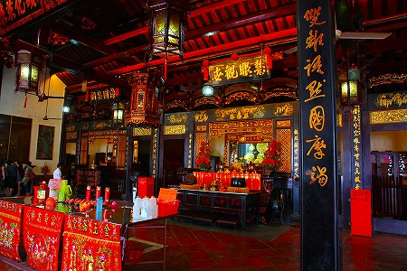

馬来西亜珍寺大行進、最後はマラッカの下町でにぎやかに終幕、と参りましょう。
マラッカの中心であるオランダ広場から川を隔てたエリアは華人が古くから住むエリア。
そんな下町の目抜き通り、通称ジョンカーストリートには数多くの店が並び、世界中から訪れた観光客であふれかえっている。
東洋と西洋の文化がごちゃ混ぜになったババニョニャ風の建物が並んでいて、いかにもマラッカ、といった風情の通りだ。
訪れた時期は旧正月の後だったので、街の上空にはこの年の干支である龍が舞っていた。
そんなジョンカーの一本北側にあるのはジャラン・トゥカン・エマスという通り。
こちらは観光客だらけのジョンカーに比べてぐっとローカル色が強くなる。
土産物を売る店は少なくなり、その分地元向けの店や食堂などが多い。
通りにはこんな感じの店が並んでいる。
一見、雑貨屋のようにも見えるが、実はココは仏具屋なのだ。
今回、マラッカを訪問した最大のお目当ては世界遺産である遺跡や教会ではなく、このしょぼくれた仏具屋なのだった。
これまでにも何度か紹介したが、中華世界では死者があの世で不自由なく暮らせるために色々なモノを紙で作って奉納する。
奉納されたモノはお寺の焼却炉で焚かれ天に昇り、故人のところにデリバリー、という仕組み。
かつては冥界専用の紙幣だけだったが、現在では家、車、船、服、食品、あげくの果てには携帯電話、パソコン、テレビ、証券までもあの世に「輸出」しているのだ。
その現世の感覚をそのままあの世に持っていくかのようなエスカレートっぷりは見ていて実に面白いのだ。
精々三途の川の渡し賃の六文銭を持たせる程度の日本とは大違いなのである。
そんな素敵グッズが仏具屋で売られている、というわけ。
特にマラッカは華人が古くから住んでいるのでこのような仏具屋が軒を連ねているのだ。
かつて秦の始皇帝がこの世で得た全てのものをあの世に持っていこうとした兵馬俑の現代版ともいえよう。
それにしてもこの店先の様子、玩具店と見分けがつかない。
ちなみに近所の玩具店はこんな。
店先に吊るされた奉納品のラインナップの豊富さよ。
液晶テレビ（パネソニック製）。
出力500ｗのラジカセ
そして自家用車。
最近のトレンドは運転手付き。
車をあの世に届けたのはいいが「そういえば死んだ爺さんは車の免許持ってないし生涯チャリしか乗らなかったなあ〜」と心配する人への配慮なのだろうか。
こういう細かすぎる配慮から華人の死生観がよく見えてくる。
つまり死後の世界は滅茶リアルなのだ。
勿論華人の間でも地獄が存在することはこれまで紹介したとおりだが、それとは別の現代的な死後の世界の捉え方があるようだ。
あの世に行っても豪邸に住み、高級車の後部座席で金勘定してる煩悩全開な生活。
下手すりゃ地獄で釜茹でされながらもスマホでツイッターをチェックしてるのでは。
| 生前は前科6犯 ＠zenka6 3時間 下半身溶ろけちゅう |
|
|
|
|
| ぽじティブ゛子 ＠HAPPYdog 45分 半身浴はいいですよ〜 RT＠zenka6下半身溶ろけちゅう |
|
…てな感じなのか？
冥界のドライバーだけにチョット心霊写真ぽいですね。
ちなみにマレーシアは日本と同じ車が左側通行。旧英国領であるインドシンガポールマレーシア香港なども左側通行だ。
どの国で作っているのかは分からないが、香港メイドのモノもそのまま流用出来るわけだ。
↓こちらはさらに芸が細かい。中のシートを作っているのではなく、ドアのガラスに内装の写真を貼り付けてあるぞ。
ホンモノに似せて作るのはお家芸、とばかりに版権ギリギリのせめぎ合い供物。
もはや真面目なのかふざけてるのか良く解らない。いや、多分真面目過ぎてリアリズムを追求したゆえにこんな事になっちゃったんだと思う。
おお、ヴィトンのマルチカラー風まで！
もちろんよ〜く見るとLVではなくWL、つまりW（ワンダー）L（ランド）、なのである。多分。
あ、ココにもモノグラム、風な。ブランド好きだなー。
一番可笑しかったのがコレ。
ランニングマシンとマッサージチェア。
死んでも健康に気をつけなきゃいけないのか…。ある意味地獄だねー。
コンセントまで付いてら。いや、別にいいけど。
観光客も珍しそうに覗いていた。
このジャラン・トゥカン・エマスというストリート、なぜこんなに仏具屋が密集しているのかといえばその先に青雲亭という道教寺院があるからなのだ。
というわけでここからが本題です。
立地、装飾の細かさ、参拝者の多さなどを見るとマラッカの中でも有数の名刹、ということになろう。
入り口には門番のようにオッサンが座っていた。
線香でも売ってるのかと思ったら、おもむろにハーモニカを吹きはじめた。物乞いさんなのね。
中に入ってみると思いのほか渋い。

いわゆる歴史のある道教寺院である。
黒檀のような柱に刻まれた金文字がいかにもチャイナテイストだなあ。
朱！漆！金！
…は中華寺院の三原色といってもいいかもしれない。

ところで。
境内の一画で巨大な箱を持った女の子がいた。学校で作った工作だろうか…。
いや、違う！
これは死者に奉納する紙の自動車だ。
見れば後ろの父ちゃんは宝箱のようなもの（コレも紙製）を奉納している。
車に黄色い紙が貼られているのは祈祷済みのラベルか。
きっとご先祖様にトヨタのワゴン車と宝箱がデリバリーされるのだろう。よかったね。
女の子がジッと運転席を覗き込んでいた。「ああ、運転手もいるんだ〜」とか思っているのだろうか。
境内をうろついてみる。
基本オールドスクールの真面目なお寺だが、チョット気になるカミサマもちらほら。
まずこちら。
机の下にたくさんいるのはオレンジ色の布が巻かれた虎の石像。
何故虎なのか？そして何故布が巻かれているのか、詳細は一切不明である。
近くには壁に埋め込まれていた虎親子の図。
背景は鏝絵のようなレリーフ、虎は陶器のモザイク状のレリーフで出来ており、立体感が増していた。
一番奥にあった石景。
陶製の羅漢像がたくさん配されている。
なんだか無闇に目出度くていいな。
勿論屋根の上では年中無休、24時間営業のお祭り騒ぎ。
屋根の上がにぎやか過ぎるぞ。
こぼれてきそうな勢いだ。
軒下にも細かく神々がいらっしゃるから要注意だ。
20世紀を代表する近代建築家、ミース・ファン・デル・ローエは「神は細部に宿る」という名言を残した。
細かいディテールにまでモダニズムとしての精神を徹底させよ、という意味だったのだろうか。
しかし
そんな事改めて言われなくたって、とっくの昔っから神は細部に宿りっぱなし、なのである。
いやむしろ細部にこそ神は宿っているとすら言えるのだ。
この寺に祀られている仏像や神像は精々20体ほどだろう。
ところが屋根の上や軒下にある建築装飾としての神像の数はそれらを遥かに凌駕している。
これはどういうことか。
多神教である道教ではリスペクトすべき神仏があまりにも多いので祭壇に納まりきれない、そこで建築装飾の中にも神像を組み込まざるをえなかったのではなかろうか。
もう、カミサマ大好き過ぎてどうしていいか解らないよ、俺！的な心情がビシビシ伝わってくる。
信仰施設、しかもやりすぎな宗教施設（つまり珍寺）のベースには常に神仏への過剰で異常な愛情が込められているのだ。
…とまあ、これにて馬来西亜珍寺大行進、修行メニューはひとまず終了。
今回も実りある修行であったぞよ。
あと本編ではお伝えできなかった部分はおまけにて報告の予定。
それではこの辺でとりあえず中締め、ということで。
最後におまけ
馬来西亜珍寺大行進